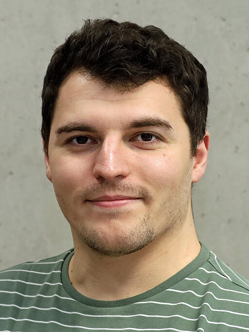

01.020, Mathematik Ost
Emil-Fischer-Straße 40
University of Würzburg
97074 Würzburg
Germany
I am Seb Scott, a postdoc in the Mathematics of Machine Learning group at Julius-Maximilians-Universität Würzburg (JMU) funded by the COMFORT BMBF project and am looking into sparse and robust training of neural networks.
In January 2025 I defended my PhD Thesis about theoretical and algorithmic aspects of how one can use machine learning techniques for solving inverse problems (link to manuscript). I was supervised by Professor Matthias J. Ehrhardt and Dr Silvia Gazzola at the University of Bath as part of the 7th cohort of the EPSRC SAMBa CDT.
My undergraduate Masters dissertation on "efficient priorconditioning for edge enhancement in imaging" was supervised by Dr Silvia Gazzola and Professor Alastair Spence. The project involved the regularization of discrete ill-posed linear inverse problems and employing Krylov subspace methods that adaptively define edge-enhancing encodings between iterates.
My mathematical interests primarily lie in numerical analysis, with inverse problems being a particular focus. Inverse problems arise naturally in various applications such as medical imaging, wherin one has a quantity of interest (e.g. brain scan) but only has access to an indirect measurement (e.g. sinogram/output of a medical device) and an understanding of how these quantities are related (e.g. radon transform). The task is then: given this indirect measurement, what is associated quantity of interest that gives rise to said measurement?
Due to noise in the measurement data, directly solving this problem often leads to a meaningless reconstruction of the quantity of interest. Instead, one considers a "nearby" problem that is less sensitive to noise, but still representative of the orginal problem - a technqiue called variational regularisation. My PhD concerned how one can use machine learning techniques, with mathematical guarantees, to solve inverse problems. Specifically, we explored a nested optimisation problem that can be used to determine appropriate hyperparameter values encountered in variationally regularised problems.
During my MRes year of the Integrated PhD, I took the following modules:
During my first year of research, the following taught modules were also taken:
| 09/2026 | Gave a talk on multilevel mirror descent at the STOP: STructured OPtimization for inverse and learning problems workshop, ENS Lyon, France. |
| 07/2026 | Gave a talk on multilevel mirror descent and sparsity forecasting at the Würzburg-Bayreuth Seminar, University of Bayreuth. |
| 05/2026 | Attended the ICMS Imaging inverse problems and generating models: sparsity and robustness versus expressivity, Edinburgh, UK |
| 02/2026 | Gave a talk on the current status of exploting sparsity for speedups at the annual COMFORT meeting, DESY, Germany. |
| 02/2026 | Gave a talk on Efficient gradient-based methods for bilevel learning via recycling Krylov subspaces at the Applied Mathematics Winter Seminar 2026, Garmisch-Partenkirchen, Germany. |
| 02/2026 | New preprint on Sparse Training of Neural Networks based on Multilevel Mirror Descent is now available. This is joint work with Yannick Lunk and Leon Bungert (University of Würzburg) |
| 09/2025 | Led a workshop on machine learning and recommendation systems for prospective University students as part of the wümax Mathe-Camp. |
| 09/2025 | Presented a poster about Optimal Regularization Parameters via Bilevel Learning at the Conference on Mathematics of Machine Learning, TU Hamburg. |
| 06/2025 | Gave a talk on Efficient gradient-based methods for bilevel learning via recycling Krylov subspaces at the 30th Biennial Numerical Analysis Conference, University of Strathclyde, Glasgow, in the minisymposium for Recent advances in numerical linear algebra with insights from scientific machine learning. |
| 03/2025 | Gave a talk on Efficient gradient-based methods for bilevel learning via recycling Krylov subspaces at the Mathematical Signal and Image Analysis workshop in the minisymposium for Deep Learning for Inverse Problems. |
| 02/2025 | I began a Postdoc position in the Mathematics of Machine Learning group at Julius-Maximilians-Universität Würzburg (JMU), as part of the BMBF funded project COMFORT. |
| 01/2025 | I successfully passed my PhD viva! I would like to thank Yury Korolev and Luca Calatroni for agreeing to be my examiners. |
| 12/2024 | Our preprint "Efficient gradient-based methods for bilevel learning via recycling Krylov subspaces" is now available on arXiv! |
| 10/2024 | Submitted my PhD thesis on "Theoretical and Algorithmic Advances in Bilevel Learning for Inverse Problems" for which I was supervised by Dr Matthias J. Ehrhardt and Dr Silvia Gazzola |
| 09/2024 | Attended the 4th IMA Conference on Inverse Problems: from theory to application. and presented at the minisymposium Attendance was in part funded by the IMA Small Grant Scheme. |
| 09/2024 | Began a 2 month research visit at TU/e, hosted by Remco Duits. This visit was possible thanks to the REMODEL staff exchange project. |
| 06/2024 | Attended the University of Bath Doctoral Celebration Evening where I recieved a Doctoral Recognition Award. |
| 05/2024 | Gave a talk at the Pint of Science Festival about how one how one formulates and solves an inverse problem, with a focus on computerised tomography. |
| 05/2024 | Attended IPMS24 and presented at the minisymposium for Inverse and Control Problems for Evolution Equations and Variational Inequalities. Attendance was in part funded by the QJMAM Fund for Applied Mathematics. |
| 10/2023 | Gave a talk at the University of Bath Postgraduate Seminar Series (PSS) on "What makes a regulariser good?". This is based on our recent work "On Optimal Regualrization Parameters via Bilevel Learning". |
| 10/2023 | Attended the Ada Lovelace day at the University of Bath where I gave a lightning talk about Emilie du Chatelet |
| 09/2023 | Our preprint "Majorization-Minimization for sparse SVMs" is now available on arXiv! This is work started at the ATOMI workshop in June 2022. |
| 08/2023 | Attended ICIAM 2023 and presented at the minisymposium for Recent advances in deep learning-based inverse and imaging problems. |
| 07/2023 | Gave a talk at TU Graz to the Vision, Learning and Optimization Group about Optimal Regularization Parameters via Bilevel Learning |
| 07/2023 | Started a 6 week research visit hosted by Thomas Pock at the Institute for Computer Graphs and Vision, TU Graz, Austria. This visit was possible thanks to the SAMBa internationalisation fund and the LMS Travel Grants for Early Career Researchers. |
| 05/2023 | Attended and gave a talk at the 2023 SIAM Conference on Optimization, Seattle, about Learning the Regularization Parameter for Inverse Problems. Attendance was possible thanks to the SIAM Student Travel Award, and the IMA Small Grant Scheme. |
| 05/2023 | Our preprint "On Optimal Regularization Parameters via Bilevel Learning" is now available on arXiv! |
| 01/2023 | Gave a talk at the SAMBa Ethics in Maths Reading and Discussion Group about AI Generated Art |
| 12/2022 | Attended the Deep learning for industry workshop, Maths4DL, Unviersity of Bath |
| 11/2022 | Gave a talk at the Bath Imaging Group seminar about my current research |
| 10/2022 | Gave a talk at the University of Bath Postgraduate Seminar Series about my current research |
| 08/2022 | Became secretary for the Bath SIAM-IMA student chapter |
| 08/2022 | Attended and gave a talk at the Post-graduate Researchers in Inverse Problems, Machine Learning, and Optimization (PRIMO) workshop |
| 07/2022 | Organised and attended the Statistical Applied Mathematics at Bath (SAMBa) CDT conference, University of Bath |
| 07/2022 | Attended the LMS Mathematics Communication workshop (beginner session) |
| 07/2022 | Attended the Analytic and Geometric Approaches to Machine Learning, University of Bath |
| 06/2022 | Invited to speak at the Post-graduate Researchers in Inverse Problems, Machine Learning, and Optimization (PRIMO) workshop |
| 06/2022 | Attended and gave a lightning talk at Advanced Techniques in Optimization for Machine learning and Imaging (ATOMI), INdAM workshop, Rome, Italy |
| 05/2022 | Presented a poster at the 3rd IMA Conference for Inverse Problems from Theory to Application in Edinburgh, United Kingdom |
| 05/2022 | Attended and presented at the Recent advances in computational inverse problems workshop, University of Bath |
| 05/2022 | Attended the Mathematics for deep learning opening workshop, University of Bath |
| 05/2022 | Invited to speak at the Recent advances in computational inverse problems workshop in Bath |
| 05/2022 | Co-organiser of the 2022 SAMBa Summer Conference which will take place July 2022 |
| 03/2022 | Attended the SIAM Imaging conference (IS22) |
| 02/2022 | Gave a talk at the University of Bath Postgraduate Seminar Series about using Wolfe conditions to choose the step length of a gradient-based iterative solver |
| 01/2022 | Gave a talk at the SAMBa Ethics in Maths Reading and Discussion Group about Cookies and Targeted Advertising |
| 12/2021 | Attended the Interpretability, safety, and security in AI event by the Alan Turing Institute |
| 11/2021 | Attended the Cantab Capital Institute for the Mathematics of Information – Industry Engagement event |
| 10/2021 | Gave a talk at the University of Bath Postgraduate Seminar Seriers on parameter choice rules for choosing the regularisation parameter when solving inverse problems |
| 10/2021 | Became an organiser of the University of Bath Postgraduate Seminar Seriers (PSS), alongside Ed Gallagher, for the 2021-22 academic year |
| 07/2021 | Attended the SAMBa conference, University of Bath |
| 06/2021 | Gave a talk at the University of Bath Postgraduate Seminar Seriers on my undergraduate masters project |
| 05/2021 | Attended the Numerical Analysis in Data Science Transition Virtual Workshop |
| 05/2021 | Attended the The Flip Side of the Pandemic: Recent Advances in the Mathematics of Information event |
| 03/2021 | Attended the Bath Women in Maths Conference |
| 11/2020 | Attended the Mathematical Foundations of Optimisation in Data Science conference, CCIMI |
| 10/2021 | Attended the Black Heroes of Mathematics Conference |
| 10/2021 | Attended the IMA Early Career Mathematicians’ Autumn Conference |
| 2025-26 | Machine Learning and Numerics Lab, JMU (Würzburg) |
| 2023-23 | MA20278 Machine learning 1, University of Bath (Bath) |
| 2022-23 | MA10230 Multivariable calculus and differential equations, University of Bath (Bath) |
| 2021-22 | MA10276 Programming, foundations and connections, University of Bath (Bath) |
| 2021-22 | MA10230 Multivariable calculus and differential equations, University of Bath (Bath) |
| 2020-21 | MA10265 Programming and discrete mathematics, University of Bath (Bath) |
| 2020-21 | MA10230 Multivariable calculus and differential equations, University of Bath (Bath) |
| 2018-19 | MA10230 Multivariable calculus and differential equations, University of Bath (Bath) |
WHERE TO FIND ME
You can find and get in touch with me in a variety of ways which include but are not limited to GScholar ORCiD ResearchGate